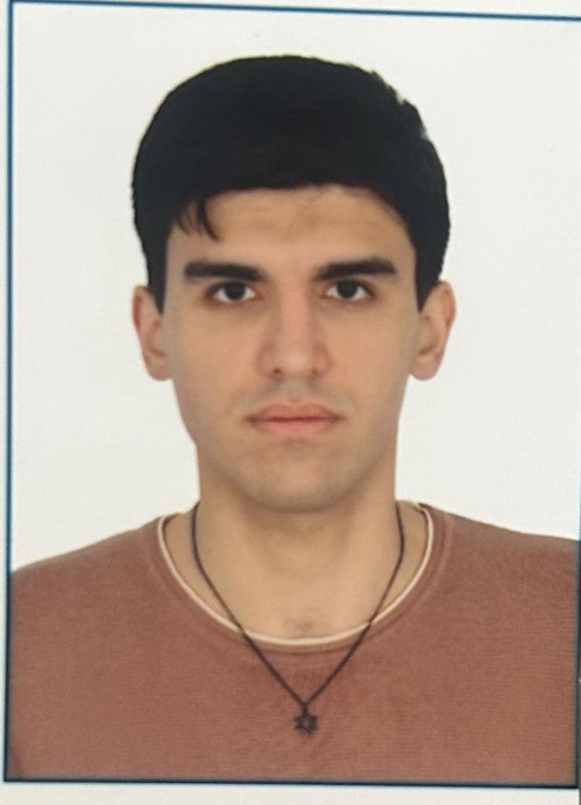

Qlobal Elmi Şəbəkə
Klubumuz dünya elminin mərkəzində dayanan aparıcı mütəxəssislərlə daimi elmi dialoq qurur, tələbələrimizi beynəlxalq tədqiqatlara istiqamətləndirir.
GM
Prof. Qərib Mürşüdov
Cambridge University, MRC LMB
Hesablama Kristalloqrafiyası Qrup Rəhbəri
Dünya şöhrətli struktur biologiyası alimi, REFMAC5 tərtibatçısı. Klubumuzun daxili elmi alətləri olan Carbox və CarboxMol layihələrinin elmi rəhbəri və məsləhətçisi.

Süleyman Hacızadə
Təsisçi & Klub Sədri
AR ETN MBİ Hesablama Struktur Biologiyası Laboratoriyası
Hesablama struktur biologiyası tədqiqatçısı, Carbox və CarboxMol həmmüəllifi. Western Caspian University (Biologiya, 2021–2026), Holberton School Azerbaijan və Texnika və Texnologiyalar üzrə Bakı Dövlət Peşə Təhsil Mərkəzi məzunu.